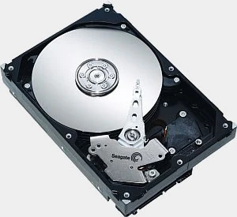

| Disco magnético | IBM |
|---|---|
| Fue la empresa que revolucionó el sector de los discos duros, el primer disco fue creado en el 1956, el 350 RAMAC y su capacidad era de 5mb y lo curioso de este es que tamaño era equivalente a 2 neveras.En 2003 IBM vendió esta línea a Hitachi. | |
|  | 7000 |